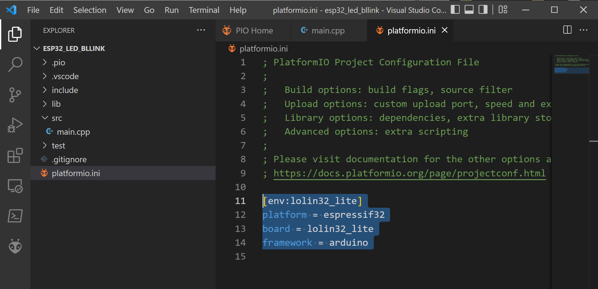
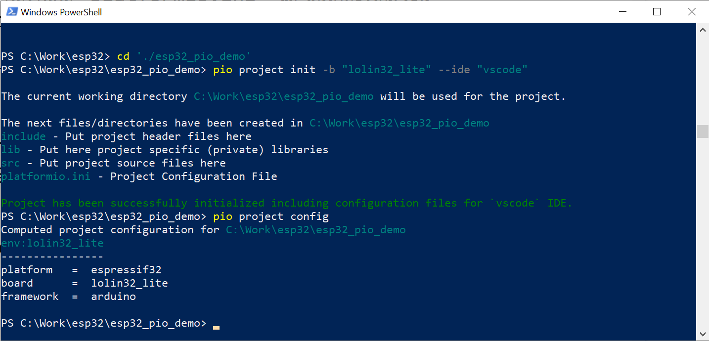

การใช้งาน PlatformIO ร่วมกับ VS Code IDE สำหรับบอร์ด ESP32#
▷ PlatformIO#
PlatformIO (หรือเขียนชื่อย่อเป็น PIO) ของบริษัท PlatformIO Labs เป็นซอฟต์แวร์ประเภท Open Source (Apache License) ที่สามารถนำมาใช้ในการพัฒนาเฟิร์มแวร์ด้วยภาษา C/C++ สำหรับไมโครคอนโทรลเลอร์หลายแบบหลายตระกูล
PIO สามารถใช้งานได้ร่วมกับ Microsoft VS Code IDE โดยนำมาติดตั้งใช้งานในรูปแบบที่เรียกว่า VS Code Extension แต่ในเอกสารนี้จะกล่าวถึงการติดตั้งและใช้งานร่วมกับ VS Code IDE สำหรับระบบปฏิบัติการ Windows เท่านั้น
PIO มีการแบ่งหรือจัดกลุ่มองค์ประกอบของซอฟต์แวร์ที่เกี่ยวข้องกับตัวเลือกทางฮาร์ดแวร์ ดังนี้
- Frameworks หมายถึง วิธีการหรือรูปแบบที่ใช้ในการเขียนโค้ด เช่น
arduinoการเขียนโค้ดด้วย API ของ Arduino ซึ่งเป็นรูปแบบที่นิยมใช้กันcmsisการเขียนโค้ดโดยใช้ API ของ ARM CMSIS สำหรับไมโครคอนโทรลเลอร์ตระกูล 32-bit Arm Cortex-M0/M3/M4/M7 เท่านั้นespidfการเขียนโค้ดโดยใช้ API ของ Espressif ESP-IDF สำหรับชิปของบริษัท เช่น ESP32 / ESP32-S2 / ESP-S3 และ ESP32-C3stm32cubeการเขียนโค้ดใช้ API ของ STM32HAL / STM32Cube สำหรับชิปของบริษัท STMicroelectronics เท่านั้นmbedการเขียนโค้ดใช้ ARM Mbed RTOS ซึ่งเป็นระบบปฏิบัติการเวลาจริงแบบ Open Source ของบริษัท Arm และใช้สำหรับบอร์ดไมโครคอนโทรลเลอร์ที่มีซีพียูภายในเป็น ARM Cortex-M Series เท่านั้น เช่น ชิปของบริษัท STMicroelectronics และ NXP/Freescale เป็นต้นfreertosการเขียนโค้ดใช้ AWS FreeRTOS ซึ่งเป็นระบบปฏิบัติการเวลาจริงแบบ Open Source อีกตัวเลือกหนึ่งzephyrการเขียนโค้ดใช้ Zephyr RTOS ซึ่งเป็นระบบปฏิบัติการเวลาจริงแบบ Open Source อีกตัวเลือกหนึ่ง
- Platforms
หมายถึง การแบ่งกลุ่มของบอร์ดต่าง ๆ ตามสถาปัตยกรรมของตัวประมวลผล
และจะต้องใช้เครื่องมือที่เป็นซอฟต์แวร์ วิธีการคอมไพล์โค้ด วิธีการอัปโหลดเฟิร์มแวร์
และการดีบักโค้ดที่แตกต่างกันไป เช่น
atmelavrสำหรับชิป Microchip/Atmel AVR (8-bit) เช่น บอร์ด Arduino Uno, Nano, MEGA2560 เป็นต้นatmelsamสำหรับชิป Microchip/Atmel SAM Series เช่น บอร์ด Arduino Zero / Arduino MKR Series (SAMD21-based)espressif32สำหรับชิปของบริษัท Espressif Systems เท่านั้น เช่น ESP32/ESP32-S2/-S3/-C3ststm32สำหรับชิป STM32 ของบริษัท STMicroelectronics เช่น บอร์ด STM32 Nucleo และบอร์ด BlackPill (STM32F4xx)nordic52สำหรับชิปตระกูล nRF52xxx ของบริษัท Nordic Semiconductor
- PlatformIO Library Manager ใช้สำหรับการติดตั้งและจัดการไลบารีต่าง ๆ ที่เป็น Open Source เช่น ไลบรารีสำหรับ Arduino เป็นต้น
▷ การติดตั้ง PlatformIO Extension#
หากยังไม่เคยใช้งาน VS Code IDE ให้ติดตั้งซอฟต์แวร์ในเครื่องคอมพิวเตอร์ของผู้ใช้ก่อน
รูป: Microsoft VS Code IDE (เว็บไซต์สำหรับดาวน์โหลดไฟล์เพื่อติดตั้งและใช้งาน)
เมื่อได้ติดตั้ง VS Code IDE ไว้พร้อมใช้งานแล้ว ถัดไปเป็นการติดตั้ง PlatformIO IDE Extension สำหรับ VS Code ซึ่งก็ทำได้ไม่ยาก
ให้คลิกเลือกจากปุ่ม "Extensions" ในแถบทางซ้ายมือ
หรือกดปุ่ม Ctrl+Shift+X จากนั้นให้พิมพ์และค้นหาชื่อ platformio
ในส่วนที่เกี่ยวข้องกับการติดตั้ง Extensions และกดปุ่ม Install เพื่อทำการติดตั้งรายการดังกล่าว
รูป: การค้นหาและติดตั้ง PlatformIO IDE extension สำหรับ VS Code
เมื่อติดตั้ง PIO ได้แล้ว จะเห็นว่า ในแถบทางด้านซ้ายมือ มีไอคอน (Icon) ชื่อ PlatformIO ถูกใส่เพิ่มเข้ามา ให้คลิกที่ไอคอนดังกล่าว แล้วจะเห็นแถบเมนูรายการคำสั่งปรากฏเพิ่ม ให้คลิกเลือก PIO Home เพื่อเข้าสู่หน้าต่างหลักของ PIO Home
รูป: หน้าต่างเมื่อเปิดใช้งาน PIO Home ใน VS Code IDE
ในหน้าต่าง PIO Home มีการแบ่งออกเป็นส่วนต่าง ๆ และมีหลายเมนูคำสั่ง เช่น การสร้างโปรเจกต์ใหม่ การติดตั้งและใช้งานแพลตฟอร์ม (Platforms) และบอร์ดไมโครคอนโทรลเลอร์ (Boards) การติดตั้งและใช้งานไลบรารีต่าง ๆ (Libraries) การตรวจสอบดูว่า มีอุปกรณ์หรือบอร์ดไมโครคอนโทรลเลอร์ใดบ้างที่กำลังเชื่อมต่ออยู่กับคอมพิวเตอร์ของผู้ใช้ เป็นต้น
▷ การสร้างโปรเจกต์ใหม่#
การสร้างโปรเจกต์ใหม่ใน PIO Home เริ่มต้นด้วยการกดปุ่ม PIO ที่ในแถบทางด้านซ้ายมือ จากนั้นให้ไปที่เมนู QUICK ACCESS > PIO Home > Open ในหน้าต่าง PIO Home จะมีปุ่ม + New Project เพื่อเริ่มต้นสร้างโปรเจกต์ใหม่โดยใช้ PIO Project Wizard
- ตั้งชื่อโปรเจกต์ (Project Name) เช่น "esp32_led_blink"
- เลือกบอร์ดที่จะใช้งาน (Board) เช่น เลือกบอร์ด "WEMOS Lolin32 Lite" สำหรับชิป ESP32
- เลือกรูปแบบการเขียนโค้ด (Framework) เช่น "Arduino Framework"
- เลือกไดเรกทอรีสำหรับการจัดเก็บไฟล์ของโปรเจกต์ (Location) อาจจะเลือกเป็น default หรือกำหนดเองก็ได้
รูป: การสร้างโปรเจกต์ใหม่ในหน้าต่าง Project Wizard
รูป: รายการของบอร์ด ESP32 (บางส่วน) ที่สามารถเลือกใช้ได้
เมื่อสร้างโปรเจกต์ได้แล้ว ก็สามารถมองเห็นไฟล์และไดเรกทอรีภายในโปรเจกต์ที่ถูกสร้างขึ้นมา เช่น
ไฟล์ src/main.cpp ที่ใช้สำหรับเขียนการโค้ด Arduino Sketch
ซึ่งจะต้องมีอย่างน้อยหนึ่งไฟล์ที่เป็น Source Code ในโปรเจกต์ เหมือนกรณีที่ใช้งานซอฟต์แวร์
Arduino IDE เพื่อเขียนโค้ดในไฟล์ Arduino Sketch (.ino)
รูป: รายการไฟล์และไดเรกทอรีของโปรเจกต์ใหม่ในช่องทางด้านซ้ายมือ
ไฟล์ platformio.ini (Project Configuration File)
เป็นอีกหนึ่งไฟล์ที่สำคัญและใช้ในการกำหนดหรือตั้งค่าสำหรับโปรเจกต์ และถูกสร้างขึ้นมาโดยอัตโนมัติ
ส่วนที่เริ่มต้นด้วย [env:lolin_lite] เรียกว่า Environment Setting Section
และมีชื่อของ Environment Name เป็น lolin_lite สำหรับโปรเจกต์ในตัวอย่างนี้

รูป: ไฟล์ platformio.ini
ข้อสังเกต: ในหนึ่งโปรเจกต์สามารถมี Environment Sections ได้มากกว่าหนึ่ง ยกตัวอย่างเช่น การเขียนโค้ด Arduino Sketch ที่สามารถนำไปใช้กับบอร์ดไมโครคอนโทรลเลอร์ที่แตกต่างกันได้ หรือมีรูปแบบการตั้งค่าใช้งานที่แตกต่างกัน ดังนั้นจึงมี Environments สำหรับการทำขั้นตอน Build Process แยกกันในแต่ละกรณีได้
ในส่วนนี้จะเห็นได้ว่า มีการกำหนดค่าตัวเลือกสำหรับโปรเจกต์ เช่น มีการระบุว่า Platform
ที่ใช้คือ espresssif32 มี Framework ที่ใช้คือ arduino
ผู้ใช้สามารถระบุค่าตัวเลือกอื่นเพิ่มได้ เช่น upload_port เพื่อระบุหมายเลขของพอร์ตอนุกรม
(Serial Port) และ upload_speed
ความเร็วในการสื่อสารข้อมูลสำหรับการเชื่อมต่อกับอุปกรณ์หรือบอร์ดไมโครคอนโทรลเลอร์ เป็นต้น
File: platformio.ini
[env:lolin32_lite]
platform = espressif32
board = lolin32_lite
framework = arduino
upload_speed = 921600
monitor_speed = 115200
upload_port = COM5
ถัดไปให้แก้ไขโค้ดในไฟล์ main.cpp ตามตัวอย่างต่อไปนี้ (ESP32 LED Blink ทำให้ LED
ที่ขา GPIO-22 กระพริบ) แล้วบันทึกการแก้ไขลงไฟล์
#include <Arduino.h>
#define LED_PIN 22 // use GPIO-22
void setup() {
pinMode( LED_PIN, OUTPUT );
}
void loop() {
// toggle LED
digitalWrite( LED_PIN, !digitalRead(LED_PIN) );
delay(500);
}
จากนั้นให้ทำคำสั่ง PlatformIO: Build ให้สังเกต สัญลักษณ์ ✓ หรือ เครื่องหมายถูก ตรงแถบด้านล่างของ VS Code IDE เลื่อนเมาส์ไปตำแหน่งดังกล่าว แล้วกดคลิกเพื่อทำคำสั่ง หรือไปที่ PlatformIO > PROJECT TASKS จากนั้นดูคำสั่งที่เกี่ยวข้องกับโปรเจกต์ เช่น Build, Upload, Monitor และ Clean เป็นต้น
รูป: การทำคำสั่ง PlatformIO Build
เมื่อคอมไพล์โค้ดและได้ไฟล์ firmware.elf ได้สำเร็จแล้ว ก็สามารถนำไปใช้กับบอร์ด ESP32 โดยให้เสียบสาย USB เชื่อมต่อกับคอมพิวเตอร์ของผู้ใช้ และตรวจสอบหมายเลขพอร์ตอนุกรมของบอร์ด ESP32 ที่ได้นำมาใช้งานในขณะนั้น
การตรวจสอบเพื่อดูว่า บอร์ด ESP32 เชื่อมต่อผ่านทางพอร์ตอนุกรมใดในขณะนั้น ทำได้หลายวิธี
วิธีการหนึ่งคือ การเปิดใช้งาน PlatformIO Core CLI (Command Line Interface)
ในหน้าต่าง Windows Powershell
จากนั้นทำคำสั่ง pio device list ในหน้าต่าง Terminal
รูป: ตัวอย่างการคำสั่ง pio device list
ให้ตรวจสอบการตั้งค่าสำหรับ upload_port ในไฟล์ platformio.ini ให้ถูกต้อง
ก่อนทำขั้นตอน PlatformIO: Upload
รูป: ตัวอย่างการทำคำสั่ง PlatformIO: Upload
เมื่อได้ทำมาถึงขั้นตอนนี้ ซึ่งเป็นขั้นตอนสุดท้าย จะสังเกตเห็นว่า LED ที่อยู่บนบอร์ดไมโครคอนโทรลเลอร์ จะกระพริบด้วยอัตราคงที่
▷ ตัวอย่างคำสั่ง PlatformIO CLI#
PlatformIO Core รองรับการทำคำสั่งแบบ CLI (Command Line Interface) ตามรูปแบบที่ได้มีการเขียนอธิบายไว้ในเอกสารออนไลน์ Platform CLI - QuickStart Guide
สำหรับผู้ใช้ระบบปฏิบัติการ Windows เพื่อให้สามารถเรียกใช้คำสั่ง pio.exe ได้ใน PowerShell
จะต้องไปเพิ่มรายการสำหรับตัวแปรของระบบ (Environment Variable) ที่มีชื่อว่า PATH
โดยใช้ชื่อไดเรกทอรีต่อไปนี้
C:\Users\%USERNAME%\.platformio\penv\Scripts\
แต่จะต้องแทนที่ %USERNAME% ด้วยชื่อบัญชีของผู้ใช้ (User Account Name)
เปิดใช้งาน Windows Powershell แล้วลองทำคำสั่งต่อไปนี้
1) ตรวจสอบเวอร์ชันของ PIO (ในบทความนี้ ได้ทดลองใช้ PlatformIO Core v5.2.5)
# show the version of the Platformio core
pio --version
2) ดูรายการ Platforms ที่ได้มีการติดตั้งไว้ใช้งานแล้วสำหรับ PlatformIO
# list all installed platforms
pio platform list
หรือระบุชื่อ เช่น espressif สำหรับการค้นหา เป็นต้น
# search platform by a specific name
pio platform search 'espressif'
3) ดูรายการ Frameworks ที่เป็นตัวเลือกสำหรับการเขียนโค้ด
# list all supported frameworks
pio platform frameworks
4) แสดงรายการชื่อบอร์ดไมโครคอนโทรลเลอร์ โดยค้นหาตามชื่อที่ระบุ เช่น
arduino, esp32, esp32s2, stm32 เป็นต้น
# search all supported boards by a specific name (e.g. 'esp32')
pio boards 'esp32'
▷ การสร้างโปรเจกต์และคอมไพล์โค้ดด้วย PlatformIO CLI#
เปิดใช้งาน Windows Powershell แล้วทำคำสั่งต่อไปนี้
1) สร้างโปรเจกต์ใหม่ เช่น ใช้ชื่อว่า esp32_demo
และเลือกใช้บอร์ด WEMOS Lolin32 Lite เป็นตัวอย่างเพื่อสาธิตใช้งาน
(ระบุชื่อของบอร์ดหรือ Board Identifier เป็น lolin32_lite)
# create a new directory
mkdir './esp32_pio_demo'
# change to the new directory
cd './esp32_pio_demo'
# initialize the new project
pio project init -b "lolin32_lite" --ide "vscode"
เมื่อทำคำสั่งตามลำดับแล้ว จะมีการสร้างไฟล์ platformio.ini และไดเรกทอรีใหม่ เช่น
src, lib, include ภายใต้ไดเรกทอรีของโปรเจกต์
2) ตรวจสอบการตั้งค่าตัวเลือกเริ่มต้นสำหรับโปรเจกต์ที่มีอยู่ในไฟล์ platformio.ini
# show the project's current configuration data
pio project config
ถัดไปลองมาดูตัวอย่างการทำคำสั่งในสองขั้นตอนแรก และข้อความเอาต์พุตที่ปรากฏ

รูป: การทำคำสั่งด้วย pio เพื่อสร้างโปรเจกต์ใหม่
เมื่อถึงขั้นตอนนี้ ผู้ใช้สามารถเปิดโปรเจกต์ใน VS Code IDE ได้ โดยทำคำสั่งต่อไปนี้
code .
รูป: การเปิดโปรเจกต์ที่มีชื่อว่า esp32_demo ใน VS Code IDE
3) สร้างไฟล์ใหม่ที่มีชื่อว่า src/main.cpp ให้เป็นส่วนหนึ่งของโปรเจกต์ และเขียนโค้ด
Arduino Sketch

รูป: การสร้างไฟล์ src/main.cpp และเขียนโค้ดตัวอย่าง
4) ทำคำสั่งเพื่อคอมไพล์โค้ดของโปรเจกต์ (ทำขั้นตอน Build) เพื่อให้ได้ไฟล์ firmware.elf
และ firmware.bin
# start the build process to generate firmware files
pio run -e 'lolin32_lite'
-e เป็นการเจาะจง Environment Name เพื่อใช้ในการคอมไพล์โค้ดของโปรเจกต์
ซึ่งในตัวอย่างนี้มีชื่อว่า lolin32_lite
แต่ถ้าต้องการคอมไพล์ทุกไฟล์ในโปรเจกต์ใหม่ทั้งหมด ให้ทำคำสั่งต่อไปนี้ ตามลำดับ
# clean the project's build directory
pio run -e 'lolin32_lite' -t clean
# rebuild the project
pio run -e 'lolin32_lite'
5) ตรวจสอบรายการบอร์ดไมโครคอนโทรลเลอร์ที่เชื่อมต่อกับเครื่องผู้ใช้
# detect the target board
pio device list
6) ทำคำสั่งเพื่ออัปโหลดไฟล์ firmware.bin ไปยังบอร์ด ESP32
# upload firmware to the target board
pio run -e "lolin32_lite" -t upload --upload-port COM5
7) เปิดใช้งาน Serial Monitor เพื่อรับข้อความจากบอร์ด
pio device monitor --port COM5 --baud 115200
รูป: การอัปโหลดไฟล์ Firmware ไปยังบอร์ด ESP32
ข้อสังเกต: การใช้คำสั่งของ PlatformIO CLI สำหรับผู้ใช้ทั่วไปอาจจะไม่จำเป็น เมื่อเปรียบเทียบกับการใช้ VS Code IDE + PlatformIO extension แต่การทำคำสั่งแบบ CLI เหมาะสำหรับการทำขั้นตอน Automated Build Process เช่น มีการตั้งค่าใช้งานและนำไปทดสอบสำหรับบอร์ดหลายรูปแบบ มีการใช้งานในลักษณะเช่นเดียวกับซอฟต์แวร์ Arduino CLI
▷ การใช้งาน Arduino Library#
ถัดไปเป็นการสาธิตการใช้งานไลบรารีสำหรับการเขียนโค้ด Arduino และในปัจจุบันก็มีไลบรารีจำนวนมากที่สามารถนำมาใช้ได้กับ ESP32
ในส่วนนี้จะสาธิตการใช้งานไลบรารีที่มีชื่อว่า FastLED เพื่อกำหนดสีของหลอด RGB LED ที่ใช้ชิป WS2812B (NeoPixel) เป็นตัวควบคุม และใช้สายสัญญาณข้อมูลเพียงเส้นเดียว
โค้ดตัวอย่างนี้ได้เลือกใช้ขา GPIO-19 ของ ESP32 เป็นขาเอาต์พุต เพื่อส่งสัญญาณควบคุมไปยังโมดูล 8-Pixel WS2818B LED Strip ซึ่งมีจำนวน 8 พิกเซล หรือมี RGB LED จำนวน 8 ดวง
เมื่อเริ่มทำงาน โปรแกรมจะทำให้ LED ในหนึ่งตำแหน่งเปลี่ยนเป็นสีแดง (ตั้งระดับความสว่างไว้คงที่)
และในตำแหน่งอื่นจะไม่สว่าง (OFF) จากนั้นจะเลื่อนตำแหน่งของ LED ที่มีสีแดง ไปตามลำดับ จนครบ 8 ดวง
(NUM_LEDS เท่ากับ 8) แล้ววนซ้ำไปเรื่อย ๆ
#include <Arduino.h>
#include <FastLED.h> // include the FastLED library
// see: https://github.com/FastLED/FastLED
#define LED_PIN 19 // select GPIO-19 pin for WS2812 LED strip
#define NUM_LEDS 8 // 8 pixels
#define COLOR_ORDER GRB
#define CHIPSET WS2812B
CRGB leds[NUM_LEDS]; // used to store the RGB values
int level = 50; // set the brightness level: 0..255
void setup() {
// set brightness level
FastLED.setBrightness( level );
FastLED.addLeds<CHIPSET, LED_PIN, COLOR_ORDER>(leds, NUM_LEDS);
leds[NUM_LEDS-1] = CRGB::Red; // set color to red
for ( int i=0; i < NUM_LEDS-1; i++ ) {
leds[i] = CRGB::Black; // turn LED off
}
FastLED.show(); // display this frame
delay(1000);
}
void loop() {
// rotate the color position
CRGB color = leds[0];
for ( int i=0; i < NUM_LEDS-1; i++ ) {
leds[i] = leds[i+1];
}
leds[NUM_LEDS-1] = color;
FastLED.show(); // update LED colors
delay(200);
}
ก่อนที่จะทำขั้นตอน Build ให้แก้ไขไฟล์ platformio.ini เพื่อระบุว่า
ต้องการจะใช้หรือนำเข้าไลบารีใดบ้างในส่วนที่เรียกว่า lib_deps (Library Dependencies)
และในตัวอย่างนี้ ได้ระบุชื่อไลบรารีเป็น FastLED/FastLED (อ้างอิงตามชื่อใน Github repository
ของไลบรารีนี้ https://github.com/FastLED/FastLED/)
และระบุตัวเลขเวอร์ชันของไลบรารีด้วย เช่น เวอร์ชัน 3.5.0 หรือสูงกว่า
[env:lolin32_lite]
platform = espressif32
board = lolin32_lite
framework = arduino
upload_speed = 921600
monitor_speed = 115200
upload_port = COM5
lib_deps =
FastLED/FastLED @ ^3.5.0
รูป: การต่อวงจรเชื่อมต่อระหว่างบอร์ด WEMOS LOLIIN32 Lite และโมดูล NeoPixel
▷ บทความที่เกี่ยวข้อง#
- การใช้งาน VS Code IDE + PlatformIO สำหรับบอร์ด Arduino (AVR)
- การเขียนโปรแกรมด้วย Arduino และ VS Code IDE + PlatformIO สำหรับบอร์ด STM32
▷ กล่าวสรุป#
บทความนี้นำเสนอขั้นตอนการติดตั้งและใช้งาน PlatformIO Extension สำหรับ Microsoft VS Code IDE (for Windows) เพื่อสาธิตการเขียนโค้ด Arduino Sketch สำหรับบอร์ดไมโครคอนโทรลเลอร์ ESP32
This work is licensed under a Creative Commons Attribution-ShareAlike 4.0 International License.
Created: 2022-05-16 | Last Updated: 2022-05-17